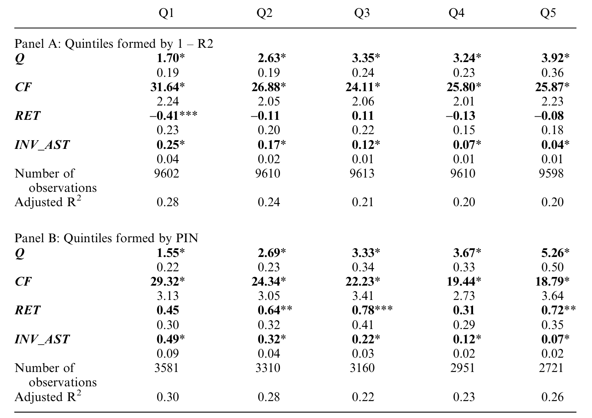
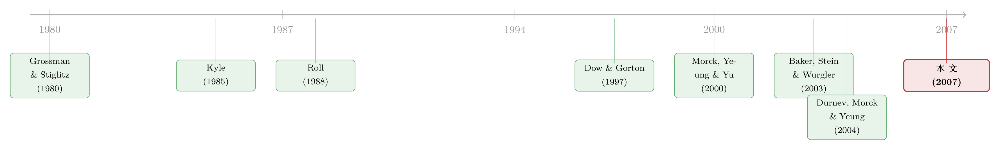

老板到底有没有在「看股价」做投资？——藏在敏感度里的一条信息暗线
本文读的是 Chen, Goldstein & Jiang (2007, Review of Financial Studies)：用两把测「股价里私有信息含量」的尺子——价格非同步性 (price nonsynchronicity, 1−R²) 和知情交易概率 (probability of informed trading, PIN)——作者发现，股价里私有信息越多，公司投资对股价就越敏感。这个看似平淡的相关，其实是在为一个更大的命题作证：经理人会从市场价格里「学」到自己原本不知道的东西，并把它用进投资决策。金融市场不是「旁观者」，它会反过来改变实体经济。
1 一个被讲了三十年、却一直没讲清的相关
公司投资和股价高度正相关，这几乎是金融学里最古老的「事实」之一。Barro (1990)、Morck, Shleifer & Vishny (1990)、Blanchard, Rhee & Summers (1993)——一篇接一篇地把这条相关测了又测。可奇怪的是，相关是清楚的，相关背后的「为什么」却始终在吵。
为什么一家公司的股价涨了，它就更愿意去投资？至少有三种讲法。
第一种最省事：股价只是被动地反映了公司的基本面，老板自己早就知道这些基本面，他按基本面投资，股价也按同样的基本面定价，于是两者一起动。在这套故事里，市场是个「旁观者」(sideshow)——它什么都没干，只是把老板已知的东西重新报了一遍价。
第二种是融资约束渠道：股价涨了，公司更容易用股权融到便宜钱，原本被资金卡住的项目得以上马。Baker, Stein & Wurgler (2003) 正是沿这条线，发现越依赖外部股权的公司，投资对股价越敏感。
但本文盯住的是第三种，也是最「冒犯直觉」的一种——学习渠道 (learning channel)：股价里含有一些连老板自己都不知道的信息，老板盯着价格，把这些新信息读出来，再据此调整投资。
听起来有点玄。老板对自己公司难道不是最懂的吗？市场凭什么知道得比他还多？
2 关键的一步：把「学习」翻译成一条可检验的不等式
学习渠道之所以长期停留在理论里——两个最漂亮的模型是 Dow & Gorton (1997) 和 Subrahmanyam & Titman (1999)——是因为它太难被「抓现行」。你怎么证明老板是在「看价格学东西」，而不是价格在「抄老板的作业」？
本文真正关键的一步，是把这个抽象命题翻译成了一个关于「敏感度」的可检验预言。逻辑是这样的：
假设某个时点，经理人要决定投资水平，他的目标是最大化公司价值，那么他会用上手头一切信息——既包括股价里反映出来的信息，也包括他自己掌握、但还没传导进价格的信息。在这个框架下，请注意一个微妙的不对称：
- 如果股价里那部分信息对老板是新的（是他原本不知道的），它会真真切切地改变他的投资决策 → 投资对价格更敏感；
- 如果股价里那部分信息老板早就知道，它确实会推动价格，但不会改变当期投资（因为这些信息早已体现在过去的投资里了）→ 这反而稀释了投资对价格的敏感度。
于是反转出现：股价里「对老板是新的」信息越多，投资对股价就应该越敏感。
这就把一个无法直接观测的「学习」过程，转化成了一个可以拿数据去测的横截面预言。剩下的全部问题，就浓缩成一句话——
怎么在数据里量出「一只股票的价格里，含有多少『私有信息』」？
3 两把尺子：非同步性与 PIN
作者没有发明新工具，而是从已有文献里借来了两把彼此独立的尺子。两把尺子从完全不同的角度逼近同一个东西，这本身就是一种交叉验证。
第一把尺子：价格非同步性 (price nonsynchronicity)。 把个股收益拆成三块——市场相关、行业相关、公司特质 (firm-specific)。前两块是系统性波动，最后一块才是只属于这家公司的波动。它由下面这个回归的 R² 来度量：
$$ r_{i,j,t} = \beta_{i,0} + \beta_{i,m}\, r_{m,t} + \beta_{i,j}\, r_{j,t} + \varepsilon_{i,t} $$
其中 r_{i,j,t} 是行业 j 中公司 i 在 t 时的收益，r_{m,t} 是市场收益，r_{j,t} 是行业收益。度量值取 1 − R²：一只股票越是「我行我素」、越不跟着大盘和行业齐步走，它的价格里就越可能装着公司特有的私有信息。
这个想法的源头是 Roll (1988) 那篇只有一个字母标题的传奇论文《R²》。Roll 发现，公司特质的股价波动几乎找不到对应的公开新闻——用他自己的话说，「财经媒体漏掉了大量私下产生的相关信息」。换言之，让股价「乱跳」的，多半不是报纸上的消息，而是投机者私下挖出来、并通过交易悄悄写进价格的东西。后来 Morck, Yeung & Yu (2000) 在跨国数据里发现，金融体系越发达的国家、个股的特质波动越高；Durnev, Morck & Yeung (2004) 则发现，特质波动高的行业，资本配置更有效率、边际 Tobin's Q 更接近 1。（关于 1−R² 这把尺子到底装着「信息」还是「噪声」，可参见《股价里那团「噪声」，原来是熊彼特的指纹》。）
第二把尺子：知情交易概率 PIN。 这把尺子来自一整套市场微观结构的结构模型，由 Easley, Kiefer & O'Hara 等一系列论文发展出来。它不看收益相关性，而是直接从订单流里把「知情交易」的概率估出来。下一节我会把这个模型一步步拆开——因为它是本文里唯一一处真正的「结构推导」，也是 PIN 这把尺子的全部底气所在。
4 PIN 的结构模型：从订单流里「捞」出知情交易
设想一个最简单的交易日。噪声交易者（出于流动性需求或纯粹瞎买瞎卖）提交买单和卖单的到达率分别是 ε_b 和 ε_s。每一天，以概率 α 发生一次「信息事件」；一旦发生，坏消息的概率是 δ，好消息的概率是 1−δ。信息事件发生时，知情交易者以到达率 μ 入场——拿到坏消息就卖，拿到好消息就买。
把这三种情形（无事件、坏消息、好消息）叠在一起，单个交易日观测到 B 笔买单、S 笔卖单的似然函数就是：
$$ \begin{aligned} L(\theta\mid B,S) =\;& (1-\alpha)\, e^{-\varepsilon_b}\frac{\varepsilon_b^{\,B}}{B!}\, e^{-\varepsilon_s}\frac{\varepsilon_s^{\,S}}{S!} \\ &+\, \alpha\delta\, e^{-\varepsilon_b}\frac{\varepsilon_b^{\,B}}{B!}\, e^{-(\varepsilon_s+\mu)}\frac{(\varepsilon_s+\mu)^{S}}{S!} \\ &+\, \alpha(1-\delta)\, e^{-(\varepsilon_b+\mu)}\frac{(\varepsilon_b+\mu)^{B}}{B!}\, e^{-\varepsilon_s}\frac{\varepsilon_s^{\,S}}{S!} \end{aligned} $$
这三行恰好对应三种「世界」：第一行是没有信息事件的平静日，买卖都只来自噪声；第二行是坏消息日，卖单一侧的到达率被知情者抬高到 ε_s+μ；第三行是好消息日，买单一侧被抬高到 ε_b+μ。直觉上，正是「买卖严重失衡」的日子，泄露了知情交易的存在。
有了 J 天的数据，假设跨日独立，就可以最大化整体似然来估出全部参数 θ = {ε_b, ε_s, α, δ, μ}：
$$ V = L(\theta\mid B,S) = \prod_{j=1}^{J} L(\theta\mid B_j, S_j) $$
最后，知情交易概率 PIN 就是「知情订单」占「全部订单」的期望比例：
直觉非常清楚：如果一只股票天天收到大致平衡的买卖单，那这些订单更像是各自独立的流动性需求，大数定律把它们抹平，信息事件概率 α 就低、PIN 就低；反过来，经常出现「一边倒」的大幅偏离，说明背后有人在用私有信息押注，PIN 就高。Easley, Hvidkjaer & O'Hara (2002) 进一步发现，高 PIN 股票要给投资者更高的预期收益，作为承担私有信息风险的补偿——这从资产定价一侧，又给 PIN「测的是私有信息」背了一次书。
5 数据与主回归
作者从六个数据库拼出样本：股价收益来自 CRSP，投资与财务数据来自 Compustat，日内逐笔交易来自 TAQ（用来算 PIN），内部人交易来自 Thomson 的 TFN，分析师覆盖来自 Zacks，机构持股来自 Spectrum。样本是 1981–2001 年的 Compustat 公司非平衡面板。
主检验估计的是论文的 Equation (7)：在标准的「投资—股价」框架里，让投资对股价的敏感度去交互两把私有信息尺子，看敏感度是否随尺子升高而升高。结果汇总在表 6 里。
核心发现：价格非同步性和 PIN 都与「投资对股价的敏感度」显著正相关，方向与学习假说的预言完全一致。也就是说，一只股票价格里装的私有信息越多，它的管理层在做投资时就越「听」价格的话。

Table 6: summarizes the results from estimating Equation (7) for both
这里有必要诚实地交代：受手头论文正文截断所限，我能确认的是表 6 中两把尺子的系数符号为正、统计显著，但无法逐一核对每个系数的具体数值与 t 值，因此本文不去引用我无法亲眼读到的精确量级。下面所有「方向性」的结论，都来自论文正文明确陈述的部分。
6 真正让人信服的，是那一连串「反向」的稳健性
如果故事到这里就结束，怀疑者完全可以反驳：你测出的「私有信息」，会不会其实是老板早就知道的信息？那样的话，正相关就跟「学习」毫无关系了。本文最扎实的部分，恰恰是把这个反驳一条条堵死。
第一招：直接控制「管理层信息」。 作者用两个代理变量去刻画老板自己掌握的私有信息——其一是内部人交易 (insider trading)：老板私有信息越多，越可能去交易自家股票；其二是盈余意外 (earnings surprise)，用盈余公告日附近的绝对异常收益度量，捕捉老板在财报披露前就已掌握、尚未进入价格的信息。结果是：这两个变量都与投资—股价敏感度负相关——老板自己知道得越多，就越不依赖价格。更关键的是，把它们放进回归后，两把私有信息尺子的效应几乎纹丝不动。这正说明，尺子测到的私有信息，是老板原本不知道的那一部分。
第二招：分析师覆盖。 一个反直觉的发现：分析师覆盖越多，投资对股价反而越不敏感。为什么？因为在本文样本期（公平披露规则 Reg FD 生效之前），分析师的信息很大程度上来自公司管理层自己——老板早就知道，于是这部分信息推动了价格、却不改变投资。叠加上 Easley, O'Hara & Paperman (1998) 的论点：分析师还会吸引更多噪声交易，反而稀释了价格里的私有信息含量，敏感度被进一步压低。（价格反过来会不会「教」分析师做预测，是另一面有趣的问题，可参见《价格会「教」分析师做预测吗？》。）
第三招：学习渠道 vs. 融资约束渠道。 作者没有把 Baker, Stein & Wurgler (2003) 的融资约束渠道一脚踢开，而是按资本约束程度分成五个分位子样本去看。结论很克制也很可信：两条渠道都在起作用，但作用在不同的公司身上。学习渠道与约束渠道并不互斥，而是各管一摊。
第四招：投资—现金流敏感度。 文献长期发现投资与现金流强相关（Fazzari, Hubbard & Petersen, 1988）。本文发现，当价格含有更多私有信息时，投资对现金流的敏感度反而更低。顺着 Gomes (2001) 和 Alti (2003) 的思路，这可以这样理解：现金之所以和投资相关，部分是因为它提供了股价之外、关于投资盈利性的信息；当价格变得对老板更有信息量，老板自然就少看现金、多看价格。
第五招：事后业绩。 如果老板真是靠价格里的私有信息做出了更好的投资决策，那么私有信息多的公司，事后经营业绩应该更好。作者发现，两把尺子都与公司事后的资产收益率 (ROA)、销售增长、资产周转率显著正相关。学习不只发生了，而且有用。
至此，五招连环，每一招都指向同一个方向。这种「多个独立证据收敛于一点」的结构，正是本文最让人信服之处。
7 文献脉络
这条研究的源头，是 Grossman & Stiglitz (1980) 关于「信息有效市场不可能存在」的根本张力——正因为信息有成本，价格才不可能完美有效，私有信息才会以不同程度沉淀进不同股票的价格里。Kyle (1985)、Glosten & Milgrom (1985) 则给出了知情交易如何通过下单写进价格的微观机制。

接着，两条支流分别长出了本文用的两把尺子：Roll (1988) 从 R² 出发，开创了用价格非同步性度量私有信息的传统，经 Morck, Yeung & Yu (2000)、Durnev, Morck & Yeung (2004) 发扬光大；Easley, Kiefer & O'Hara 一系则从订单流出发，发展出 PIN，并由 Easley, Hvidkjaer & O'Hara (2002) 接入资产定价。
理论一侧，Dow & Gorton (1997) 和 Subrahmanyam & Titman (1999) 论证了经理人可以、也应当从价格里学习，从而让金融市场「反作用」于实体经济。本文 (2007) 站在这两股支流的汇合处：它第一次把 PIN 接进了实体投资，也是最早在公司金融语境里使用市场微观结构度量的实证论文之一，并直接检验了「价格信息含量 → 投资敏感度」这条因果链——而这条链，恰恰可能就是 Durnev, Morck & Yeung (2004)「非同步性提升投资效率」背后的传导机制。
8 评论与延伸（Q&A + 研究方向）
(a) 几个可能的疑问
Q：1−R² 到底是「私有信息」还是「噪声」？股价乱跳也可能只是非理性。
这正是 Roll (1988) 自己留下的两种解释：私有信息，或偶发的狂热。后续证据更偏向信息：Durnev et al. (2003) 发现非同步性高的股价更能预测公司未来盈利。但这把尺子确实是个「联合假设」——它假定特质波动主要来自信息而非噪声，这一点本文也坦承是其解释的软肋。
Q：既然股价里有老板不知道的信息，他为什么不直接打电话问交易员？
因为这些信息分散在大量彼此之间、以及与公司之间都没有沟通渠道的市场参与者手里。价格是把这些零碎信息聚合起来的唯一装置——这是 Hayek 式的洞见，也是 Dow & Gorton (1997) 模型的内核。老板能读到的，只有聚合后的价格，而非每个交易员的私货。
Q：正相关就一定是「学习」吗？会不会是反向因果，或者第三个变量？
这是最实质的威胁。作者用控制管理层信息、公司规模、融资约束等一长串稳健性去逼近，但他们自己也明确承认：仍有可能两把尺子碰巧与「公司存续异常依赖市值」这类因素相关，从而驱动了敏感度。严格说，本文检验的是一个联合假设——(i) 两把尺子确实测私有信息，且 (ii) 老板从价格里学。
Q：PIN 和非同步性测的是同一个东西吗？为什么要两把尺子？
它们来自完全不同的数据与模型：一个出自收益相关性，一个出自订单流的结构估计。两者大概率有共同成分（私有信息），但测量误差几乎无关。两把尺子给出一致结论，正是为了让「测量误差恰好制造了结果」这种解释变得难以成立。
Q：分析师覆盖越多、敏感度越低，这难道不反直觉？
表面反直觉，机制却很顺：在 Reg FD 之前，分析师信息多半来自管理层本身，老板早已知道，于是它推动价格却不改变投资；加上分析师吸引噪声交易、稀释了私有信息含量（Easley, O'Hara & Paperman, 1998），敏感度被双重压低。
Q：这是不是意味着「股价非同步性高 = 离基本面更近」？
不是，这是一个容易踩的坑。本文特意澄清：价格离基本面的距离取决于全部信息量，而非只看私有信息那一块。私有信息进入价格是个需要时间的过程，私有多、公开少的价格甚至可能离基本面更远。本文只说它对老板「更有信息量」（更新），不说它「更准」。
(b) 几个可能的研究问题与提案
1. 债券价格里的反馈效应。
【经济故事】本文做的是股价→投资。但债权人和股东对「该不该投资」的偏好并不一致，债券利差/CDS 里也可能含有股价之外的私有信息。经理人是否也从自家债券价格里学？如果学，方向（更保守 vs. 更激进）会和股价相反吗？
【可行性】中。TRACE 逐笔成交可构造债券版的流动性/信息度量，配合 Compustat 投资数据。难点在识别：债券交易稀疏、PIN 这类订单流度量在债市不易估，且债券价格与股价高度共振、难以剥离增量信息。
2. 外资持有人与价格信息含量。 【经济故事】若外资进入提高了某只股票的公司特质信息含量（更多人去挖这家公司），按本文逻辑，其投资对股价的敏感度应当上升。这给「外资改善资本配置」提供了一个微观传导机制。 【可行性】中。可借「可投资度 (investability)」开放作为准自然实验来制造外生变化（这一思路在《外资来了，全球新闻就传得更快吗？》里已有运用），再看非同步性与投资敏感度的联动。识别的关键是开放时点的外生性。
3. Reg FD 前后，学习渠道是否变化。 【经济故事】Reg FD 切断了分析师从管理层「拿料」的暗道。按本文机制，这会同时改变两件事：分析师信息变「公开化」、价格里相对老板而言的私有信息变多。学习渠道（投资—股价敏感度对私有信息的依赖）在 FD 之后应当增强。 【可行性】中。Reg FD (2000) 提供了清晰的时间断点，可做双重差分；本文样本恰好横跨这一节点，数据现成。难点是同期还有 decimalization 等微观结构变化混入，需要小心剥离。
4. 把 PIN 换成更现代的信息度量再做一遍。 【经济故事】PIN 近年受到不少批评（估计偏误、对高频环境不适应）。用 VPIN 或机器学习类的知情度量重做本文，结论是否稳健？这是对「学习渠道」这一发现的外部效度检验。 【可行性】高。度量替换 + 原框架复制，数据与方法都成熟，是一个干净的「稳健性再检验」选题。
9 我的判断
本文的贡献不在某个单点系数，而在它把一个抽象的理论命题（经理人从价格学习）转化成了一组彼此独立、却又一致收敛的实证证据。尤其是「控制管理层自有信息后，私有信息尺子依然显著」这一招，干净利落地把「价格抄老板作业」这种反向解释挡在了门外；而事后业绩、投资—现金流敏感度、约束分位子样本三招，则让整个故事在多个维度上自洽。在 2007 年，这是把市场微观结构工具引入公司金融的开风气之作。
对识别，我的担忧和作者本人一致，甚至更强一点：两把尺子归根结底都是私有信息的代理，而代理变量与「公司命运异常系于市值」这类难以观测的因素之间，很难说完全正交；本文的「学习」解释本质上是一个联合假设。另外，非同步性「测信息还是测噪声」的老问题，在本文里只能靠引用前人证据来缓解，无法在本文内部证伪。
往后我最想看到的，是把这套逻辑搬到因果识别更强的环境里——一次外生的信息含量冲击（指数纳入/剔除、做市商技术变更、外资开放、Reg FD），看投资敏感度是否随之变化。相关性收敛得再漂亮，也终究是相关性；这条「市场反过来塑造实体经济」的暗线，值得一个更硬的因果钉子把它钉死。
参考文献
- Baker, M., Stein, J., & Wurgler, J. (2003). When Does the Market Matter? Stock Prices and the Investment of Equity-Dependent Firms. Quarterly Journal of Economics 118(3), 969–1006.
- Chen, Q., Goldstein, I., & Jiang, W. (2007). Price Informativeness and Investment Sensitivity to Stock Price. Review of Financial Studies 20(3), 619–650.
- Dow, J., & Gorton, G. (1997). Stock Market Efficiency and Economic Efficiency: Is There a Connection? Journal of Finance 52(3), 1087–1129.
- Durnev, A., Morck, R., & Yeung, B. (2004). Value-Enhancing Capital Budgeting and Firm-Specific Stock Return Variation. Journal of Finance 59(1), 65–105.
- Easley, D., Hvidkjaer, S., & O'Hara, M. (2002). Is Information Risk a Determinant of Asset Returns? Journal of Finance 57(5), 2185–2221.
- Easley, D., Kiefer, N., & O'Hara, M. (1997). The Information Content of the Trading Process. Journal of Empirical Finance 4(2–3), 159–186.
- Easley, D., O'Hara, M., & Paperman, J. (1998). Financial Analysts and Information-Based Trade. Journal of Financial Markets 1(2), 175–201.
- Fazzari, S., Hubbard, R. G., & Petersen, B. C. (1988). Finance Constraints and Corporate Investment. Brookings Papers on Economic Activity 1, 141–195.
- Grossman, S. J., & Stiglitz, J. E. (1980). On the Impossibility of Informationally Efficient Markets. American Economic Review 70(3), 393–408.
- Kyle, A. S. (1985). Continuous Auctions and Insider Trading. Econometrica 53(6), 1315–1335.
- Morck, R., Yeung, B., & Yu, W. (2000). The Information Content of Stock Markets: Why Do Emerging Markets Have Synchronous Stock Price Movements? Journal of Financial Economics 59(1–2), 215–260.
- Roll, R. (1988). R². Journal of Finance 43(2), 541–566.
- Subrahmanyam, A., & Titman, S. (1999). The Going-Public Decision and the Development of Financial Markets. Journal of Finance 54(3), 1045–1082.